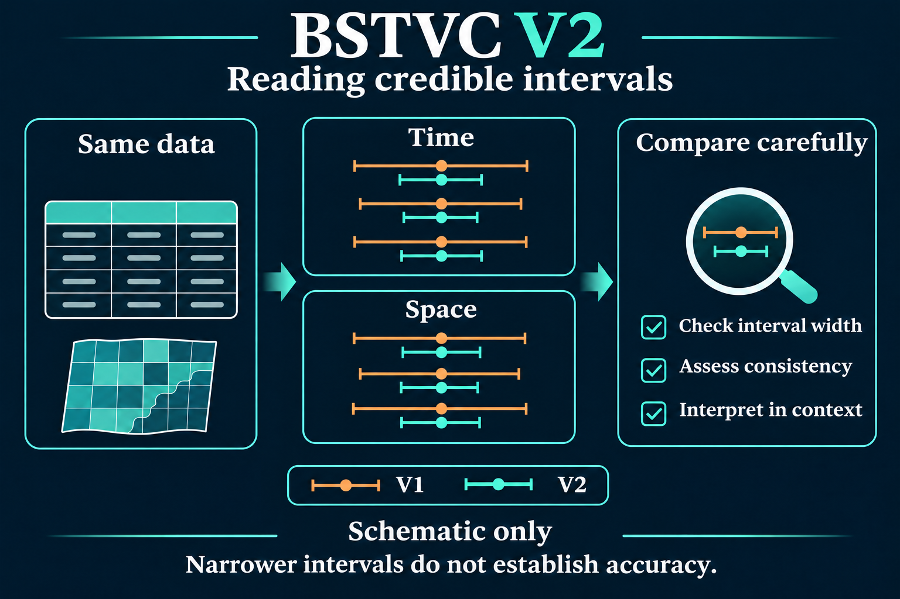
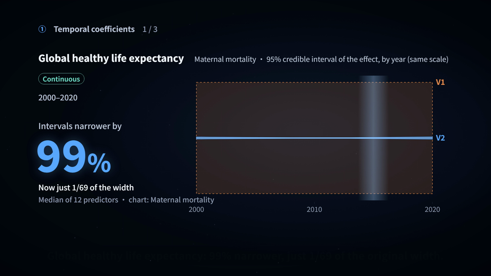
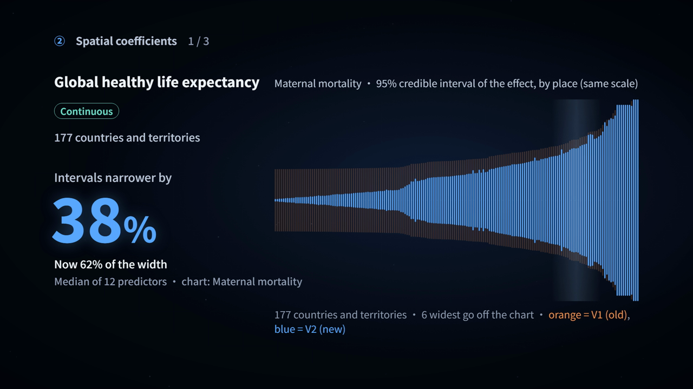
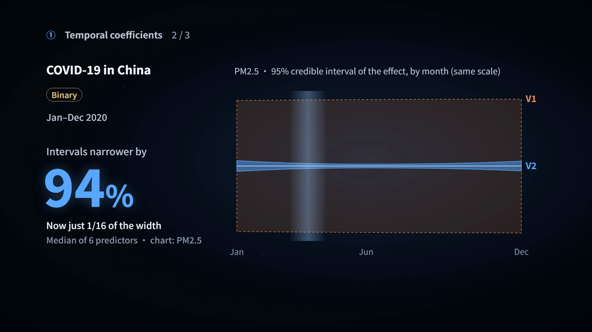
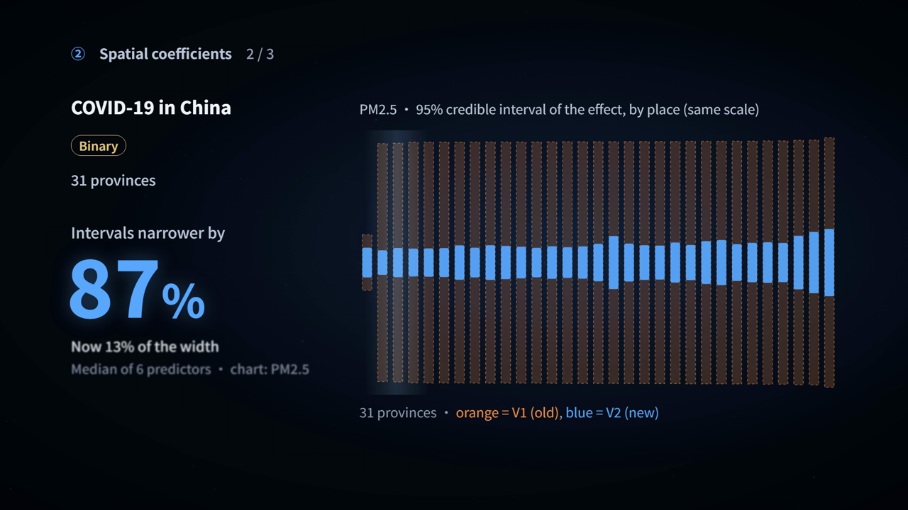
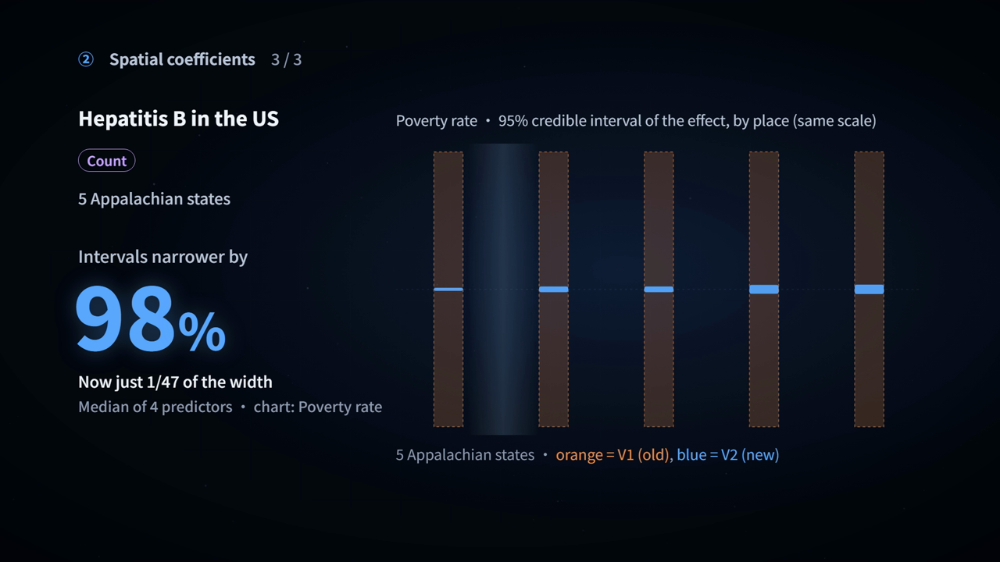

BSTVC Desktop V2
English Windows x64 installer · Version 26.10.25
Download English installerRelease notes & assets ↗
- Published
- File size
- 547,613,237 bytes (about 522.2 MiB)
- SHA-256
- 63c7873b351037de85282ac7da0febbdc6363d3579f4f39bf68b4eeca31ff0b7
V2 update ·
How do reported associations vary across time and place? Explore the V2 update through three public case studies, comparing the interval widths reported by V1 and V2.
Windows x64 · English installer 26.10.25 · Free download for research use

The supplied comparison materials use the same case-study data and matching public analysis settings. They examine 95% Bayesian credible-interval widths for temporal and spatial regression coefficients separately.
| Public case study & scope | Outcome type | Temporal width reduction | Spatial width reduction |
|---|---|---|---|
| Global health-adjusted life expectancy177 countries/territories · 2000–2020 12 explanatory variables | Continuous | ≈99% | ≈38% |
| COVID-19 in China31 provincial-level units · January–December 2020 6 explanatory variables | Binary | ≈94% | ≈87% |
| Hepatitis B in the United States5 Appalachian states · 2012–2023 4 explanatory variables | Count | ≈99% | ≈98% |
The materials report narrower intervals for all 372 temporal comparisons and 96.7% of 2,330 spatial comparisons. In the HALE case, intervals for the 150 countries with shared-border neighbours all narrowed; areas without shared-border neighbours remained broadly similar. Summary percentages are not a common reduction for every interval.
The six frames below come directly from the supplied English walkthrough. Orange denotes V1 and blue denotes V2. Select a case to expand its temporal and spatial comparisons; select an image to view it at full size. The percentages summarize each case, rather than every plotted interval.





An English-narrated overview with English subtitles introduces regression coefficients, credible intervals, and the temporal and spatial results from the three public cases. The video loads only when you press play.
Reading note: the video and poster describe reported interval-width changes in these cases. Narrower intervals alone do not establish greater accuracy, adequate calibration or causal effects. The comparison figures centre intervals on their respective posterior means to compare widths; unchanged coefficient locations or directions should not be inferred from the presentation.
Prefer Chinese? 观看中文版演示 ↗
BSTVC Desktop offers a graphical workflow for Bayesian spatiotemporal analysis. Choose your language edition, follow its guide and run a new analysis with your own data.
English Windows x64 installer · Version 26.10.25
Download English installerThe Chinese installer is distributed through a separate Baidu Netdisk link. It is a different language-edition file; the English file details and checksum do not apply to it.
Download Chinese editionFree download for research use. Follow the instructions and applicable licence for your selected edition. The version, size and checksum above identify the English installer only.
Start with the version’s data requirements and examples. Prepare your data and rerun the analysis in V2; interpret results together with model assumptions and diagnostics.
Open the English user guide ↗